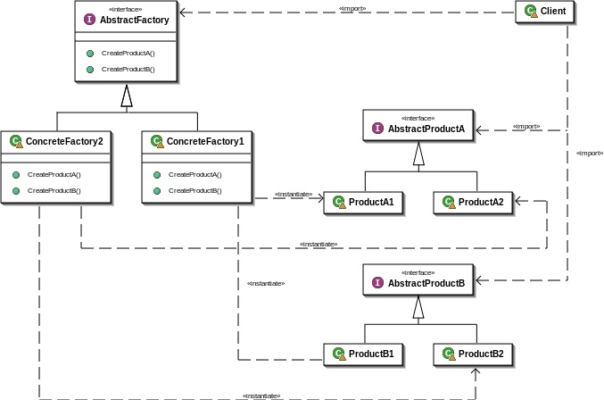

Абстрактная фабрика
Абстрактная фабрика (англ. Abstract factory) — порождающий шаблон проектирования, позволяющий изменять поведение системы, варьируя создаваемыми объектами, при этом сохраняя интерфейсы. Он позволяет создавать целые группы взаимосвязанных объектов, которые, будучи созданными одной фабрикой, реализуют общее поведение. Шаблон реализуется созданием абстрактного класса Factory, который представляет собой интерфейс для создания компонентов системы (например, для оконного интерфейса он может создавать окна и кнопки). Затем пишутся классы, реализующие этот интерфейс.
Cхема
